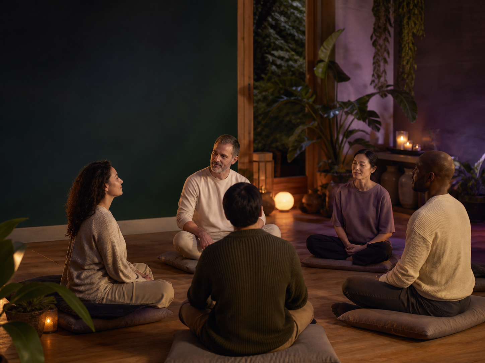

Initial three-month cycle
Weekly Monday sessions run from 17 August through 16 November 2026, at 11:00 PM Beijing time (UTC+8).
A scheduled Rainbow Sanctuary practice for quiet restoration, integration, and renewal across the physical, emotional, mental, and spiritual dimensions of life.
Mondays at 11:00 PM Beijing time (UTC+8) · starts 17 August 2026
Choose a session · $50 Support access for others
The initial cycle is held weekly from 17 August through 16 November 2026. After this cycle, twice-monthly dates will be published as they are confirmed.
Weekly Monday sessions run from 17 August through 16 November 2026, at 11:00 PM Beijing time (UTC+8).
This is a remote practice held while participants rest. There is no Zoom room, live call, or online check-in required.
After the initial cycle, the practice moves to twice monthly. The next confirmed dates will appear here before registration opens.